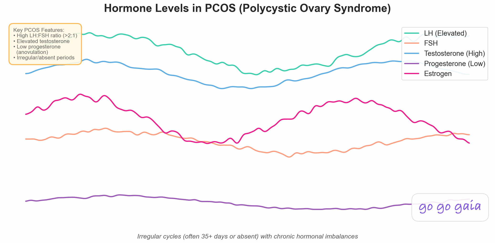

Best PCOS Tracking App 2026: 7 Apps Compared for Irregular Cycles & Symptoms

Quick Answer: Best App for PCOS?
There's no single best PCOS app. For education from PCOS researchers: AskPCOS. For flexible symptom and trigger tracking: Bearable. For a PCOS meal-and-workout program: Cysterhood. For research-led cycle logging: Clue, or Flo for community. For PCOS symptoms, meds, labs and habits together: Veya, free to start.
- For research-led cycle tracking: Clue. 200+ trackable symptoms, Berlin-based, GDPR per its listing
- For community & content: Flo. Large user base, article library, virtual health assistant in Premium
- For evidence-based education (free): AskPCOS. Built by Monash University, with doctor appointment question lists
- For PCOS symptoms, meds, labs and habits together: Veya. Built-in PCOS support keeps tracking through irregular and missing cycles, logs symptoms like acne and hair changes, and links them to labs, meds like metformin or inositol, and daily habits. Free to start, no ads
- For multi-symptom tracking: Bearable. Track custom symptoms and see correlations, built for chronic conditions
- For simple weight and food tracking: PCOS Tracker App. Weight, food and water tracker with a PCOS focus
- For structured meal & workout plans: Cysterhood. PCOS-focused recipes, workouts, and dietitian-led coaching
PCOS doesn't play by the rules of a 28-day cycle. Your tracking app shouldn't either. Here's how 7 popular apps actually handle irregular periods, PCOS symptoms, and the messy reality of polycystic ovary syndrome.
How We Picked These Apps
We shortlisted the 7 apps compared below from what women with PCOS actually use, and compared them on the criteria that matter most here: how well they handle irregular cycles, depth of PCOS-specific symptom tracking (acne, hair changes, weight, and more), nutrition tracking, and correlation insights linking symptoms to meds and daily habits. Pricing was re-verified on the App Store in October 2026, and we read each app's current privacy policy rather than relying on its marketing pages.
Full disclosure: this site is published by Holland Neurotech Inc., the maker of Veya. The list isn't ranked — each app is presented as the fit for a specific need — we include our own app only where it genuinely belongs, and we say plainly when a competitor is the better choice.
If you have PCOS, you may have noticed that many period trackers assume regular cycles. They predict ovulation around day 14 and the next period about two weeks later. And when your period is weeks late, the predictions stop being useful.
That's not helpful. What IS helpful is an app that handles the unpredictability of PCOS: irregular cycles, shifting symptoms, weight changes, acne flares. An app that helps you find patterns in the chaos. This guide compares 7 apps on how well they actually do that. Because calendar math doesn't work with PCOS, knowing the body signals that confirm ovulation matters more for you than it does for regular cycles.
Full Transparency
This guide is published by Holland Neurotech Inc., the company behind Veya. We've compared each app based on its actual PCOS-relevant features, recent user reviews, and publicly available information. Every app here has real strengths, and the best one for you depends on your specific situation.
Our goal is to help you make an informed decision, whether that leads you to Veya or another app that better fits your needs.
Educational content, not medical advice. For personal concerns, please consult your doctor.
What should a PCOS tracking app actually do?
Tracking PCOS is different from tracking a typical cycle. Before choosing an app, here's what matters most:
Irregular Cycle Handling
This is the deal-breaker. If an app can't handle cycles that are 25 days one month and 60 the next, or periods that just don't show up, it's not going to work for PCOS. Even among ovulatory cycles, length varies a lot: in a study of 612,613 cycles from Natural Cycles app users, only 13% were exactly 28 days long, and the authors (who work for Natural Cycles) conclude that fertile-day predictions based on a fixed calendar assumption are outdated (Bull et al. 2019). PCOS adds skipped or missing periods, which NICHD lists among its main symptoms. You need an app that tracks what's actually happening, not what a calendar says should be happening.
PCOS-Specific Symptoms
General period trackers let you log cramps and mood. But PCOS involves a wider set of symptoms that many general apps have no dedicated fields for. NICHD's symptom list includes irregular periods, acne, excess hair growth, weight changes, oily skin and dark skin patches:
- Acne, including hormonal breakouts, location, and severity
- Hair changes, such as excess hair growth (hirsutism) or hair thinning
- Weight fluctuations, especially around the midsection
- Energy and fatigue, alongside insulin sensitivity changes, which NICHD also lists
- Bloating and digestive issues
- Skin changes, such as oiliness or dark patches (acanthosis nigricans)
Nutrition and Lifestyle Tracking
Food and movement are things many people with PCOS want to log next to their symptoms. A tracker that shows how those things line up with how you feel is more useful than one that only predicts your next period.
Data for Your Doctor
PCOS management often involves working closely with an endocrinologist, OB-GYN, or dietitian. The ability to export your tracking data (symptoms, cycle patterns, medication effects) into a format your doctor can actually use is a genuine advantage.
How do the 7 apps compare for PCOS?
For Science-Backed Tracking: Clue
Best if you want: Research-led cycle tracking with a clean interface and detailed symptom logging.
Key Features
- Cycle tracking with predictions (uses past data to estimate future cycles)
- Tracking for 200+ symptoms and experiences, per its App Store listing
- 400+ articles on cycles, fertility, and reproductive health
- Wearable connections (Apple Watch, Oura, WHOOP, Withings, Fitbit and more)
- Headquartered in Berlin; its listing says data is protected by GDPR
Strengths
- A 2016 Obstetrics & Gynecology study that scored 20 accurate, free cycle apps gave Clue the top score, 13 of 15 (Moglia et al.). The study is a decade old, so treat it as background
- Clean, minimal interface that's not overwhelming
- Berlin headquarters, so EU privacy law applies, per its listing
- Cross-platform (iOS and Android)
Limitations
- Predictions come from your logged history, so very irregular cycles are harder to forecast
- No PCOS-specific mode or features. It's a general cycle tracker
- No nutrition, fitness, or habit tracking
- No lab result tracking
- Some features sit behind Clue Plus
Who Should Choose This
Clue is ideal if you:
- Want a straightforward, research-led tracker without bells and whistles
- Weigh data privacy practices heavily
- Mostly want detailed logging rather than PCOS-specific features
- Need Android support
Pricing: Free, with optional Clue Plus listed at $39.99/year or $9.99/month (as of October 2026).
Download: Available on iOS and Android
For Community & Content: Flo
Best if you want: A big community of people tracking their health, plus an extensive content library.
Key Features
- Cycle tracking with AI-powered predictions
- Content library with expert-led videos in Premium
- Virtual health assistant in Premium, per its listing
- Large active community with PCOS discussion threads
- Symptom tracking and health insights
Strengths
- Its App Store listing cites over 570 million downloads worldwide, so there is a large user base
- Its listing says it supports irregular periods and lets you log LH tests and basal body temperature
- Cycle report summaries you can download and share with your doctor, per its listing
- Familiar interface. If you've ever used a period tracker, Flo feels intuitive
- Cross-platform (iOS and Android)
Limitations
- Predictions are built from your logged history, so very long or missing cycles are harder to forecast
- Some content and insights require Flo Premium
- Privacy history: the FTC alleged Flo shared health data with outside analytics firms, including Facebook and Google, after promising privacy; the order was finalized in June 2021 (FTC case page). In a related class action, $59.5 million in proposed settlements with Flo, Google and Flurry received preliminary approval in April 2026 and the final approval hearing is October 29, 2026; a jury found Meta liable in August 2025 (class counsel, court-approved notice)
- No nutrition tracking, no habit tracking, no lab result tracking
- No wearable integration for cycle-specific data
Who Should Choose This
Flo is ideal if you:
- Want a large community for support and shared experiences
- Value educational content and articles alongside tracking
- Are comfortable with the app's data practices (its listing describes an Anonymous Mode that unlinks personal identifiers from your health data)
- Want a familiar, popular app that "just works" for basic tracking
Pricing: Free, with optional Flo Premium; annual plans are listed around $44 to $60/year on the App Store (as of October 2026), and offers vary.
Download: Available on iOS and Android
For Evidence-Based Education: AskPCOS
Best if you want: Evidence-based PCOS information from a university research team.
Key Features
- Built by Monash University researchers who work on the International PCOS Guideline (Monash research record); its App Store listing says the factsheets were updated to match the 2023 guideline
- Symptoms tracker
- Healthy-lifestyle guidance and infographics
- A question list to prepare for doctor appointments
- Discussion forum
- Co-designed with women living with PCOS
Strengths
- Free, with no in-app purchases listed
- Developed by a university research group rather than a commercial publisher
- The question list is a practical way to prepare for doctor appointments
- Good starting point if you're newly diagnosed and want reliable information
- Cross-platform (iOS and Android)
Limitations
- Primarily an educational tool. The symptom tracker exists but it's basic compared to dedicated tracking apps
- Last updated September 2023 per its listing, so it hasn't seen recent development
- Very few App Store ratings (2 at last check), so there is little user feedback to go on
- No nutrition tracking, fitness tracking, or wearable integration mentioned in the listing
- No correlation insights or cycle predictions mentioned in the listing
Who Should Choose This
AskPCOS is ideal if you:
- Were recently diagnosed and want trustworthy, evidence-based information
- Want help preparing questions for your doctor
- Want a free resource from a university research group
- Are looking for education first, tracking second
Pricing: Free, no in-app purchases listed on the App Store (as of October 2026).
Download: Available on iOS and Android
For All-in-One PCOS Management: Veya
Best if you want: One free-to-start app that keeps tracking through irregular and missing cycles, logs PCOS-specific symptoms like acne and hair changes, and shows how your food, habits, bloodwork, and medications connect to them.
If you want mood and symptoms tracked alongside your cycle, see our guide to all-in-one cycle, mood & symptom tracking. And since BMI and waist circumference are part of a standard PCOS workup, our BMI & waist-to-height calculator shows you both numbers together, plus what they can't tell you on their own.
Key Features
- Built-in PCOS mode that handles irregular and missing cycles without breaking
- Symptom tracking that covers PCOS-related ones (acne, hair changes, weight, fatigue)
- Nutrition tracking alongside your cycle and symptoms
- Correlation insights that show which foods, habits, or lifestyle factors affect YOUR specific symptoms
- Wearable integration (Apple Watch, Oura Ring, Garmin) for automatic temperature, HRV, and sleep data
- Lab tracking (TSH, AMH, progesterone and more) so you can see trends over time
- Medication and supplement tracking (metformin, inositol, birth control, etc.)
- Doctor-report export (Pro)
- Fertility tracking with ovulation detection for TTC with PCOS
- Ask Veya, AI answers based on your own history (Pro)
Strengths
- Cycle, symptom, mood, energy, nutrition, fitness and habit tracking, plus pattern insights and correlations over any window, are free
- Correlation engine shows connections like "your acne is worse on weeks when you eat more dairy" or "your energy is higher when you exercise 3+ times"
- Wearable data fills in gaps that manual logging misses (automatic sleep and temperature tracking)
- Lab tracking is built in alongside cycle and symptom logs
- No ads, no data selling
Limitations
- iOS only. No Android version yet
- Newer app with a smaller user community (you won't find PCOS discussion forums inside the app)
- Ask Veya, doctor-report export and unlimited habit and symptom tracking need Pro ($9.99/month or $49.99/year, as of October 2026)
- Smaller support team, so response times can be slower
Who Should Choose This
Veya is ideal if you:
- Want to understand how your diet, exercise, sleep, and habits affect your PCOS symptoms
- Track with a wearable and want that data connected to your cycle
- Want to bring organized data to your doctor appointments
- Are trying to conceive with PCOS and need ovulation tracking alongside symptom management
- Prefer one app instead of juggling several
Pricing: Free for core tracking, including correlations. Pro ($9.99/month or $49.99/year, as of October 2026) adds Ask Veya, doctor-report export and unlimited habits and symptoms. For a closer look at what the app tracks for PCOS specifically, see our PCOS tracking features.
Download: Available on iOS App Store
For Multi-Symptom Tracking: Bearable
Best if you want: Maximum customization. Track literally anything and see how it correlates with everything else.
Key Features
- Fully customizable symptom tracking. Create any symptom, factor, or metric you want
- "Impacts" view shows correlations between your tracked factors and outcomes
- Period tracking as an optional module (not the core focus)
- Medication, supplement, and treatment tracking
- Mood, energy, pain, and sleep tracking
- Cross-platform (iOS and Android)
Strengths
- Fully customizable: you choose what to track
- Its App Store listing says over 2 million patients and doctors use it, and names PCOS among the conditions its cycle-phase view is useful for
- Correlation view links your symptoms to sleep, food, weather, stress, medication and habits
- Free to download, with Premium plans for more
Limitations
- Not designed cycle-first. Period tracking is a module inside a broader health app. If you want dedicated cycle features (phase predictions, fertile windows, pregnancy mode), you'll need another app alongside Bearable
- No ovulation tracking or fertility predictions
- Food logging is aimed at spotting triggers, not tracking calories or macros
- Wearable sync is limited to steps, sleep and heart rate from Apple Health and Fitbit, per its listing
- Interface can feel overwhelming. There are a LOT of tracking options and it takes time to set up the way you want
Who Should Choose This
Bearable is ideal if you:
- Have multiple conditions alongside PCOS (IBS, anxiety, migraines) and want to track them all together
- Want maximum control over what you track and how
- Care more about symptom correlation than cycle prediction
- Need an Android app
Pricing: Free to download; Premium plans are listed at around $34.99/year or $6.99/month on the App Store (as of October 2026), with other plan prices also listed.
Download: Available on iOS and Android
For Simple Weight & Food Tracking: PCOS Tracker App
Best if you want: A simple weight, food and water tracker with a PCOS focus.
Note: this section describes the PCOS Tracker App by Healthium, Inc. as its App Store listing describes it in October 2026. An older app with a similar name is no longer on the App Store.
Key Features
- Diet tracker with presets for different eating styles
- Weight tracker and water tracker with reminders
- Daily recommendations, stats and insights
- Apple Health integration for weight, BMI, steps, exercise minutes and water
Strengths
- Simple and focused, without feature bloat
- Recently updated (June 2026 per its listing)
- Syncs weight and activity data from Apple Health
Limitations
- It's a weight and food tracker. Its listing doesn't mention logging periods, acne, hair changes or other PCOS symptoms
- Its listing leans on a carnivore-diet approach, which is one dietary pattern among many; the listing itself advises consulting a physician before starting any diet
- The listing says purchase is required to access app features and content
- Rated about 3.2 from roughly 300 ratings in the US App Store (October 2026)
- No cycle prediction, correlation insights or doctor export mentioned in the listing
Who Should Choose This
PCOS Tracker App is ideal if you:
- Want a simple weight, food and water log
- Plan to track cycles and symptoms in a separate app
- Prefer a focused app over a feature-rich one
Pricing: Free to download; Premium Access in-app purchases are listed from $11.99 to $89.99 on the App Store (as of October 2026). Android availability: check Google Play directly.
Download: Available on iOS
For Structured PCOS Lifestyle Plans: Cysterhood
Best if you want: A structured program with weekly meal plans, workouts, and coaching designed specifically for PCOS.
Key Features
- Weekly PCOS-friendly meal plans with grocery lists
- 250+ gluten- and dairy-free recipes, with new ones added monthly, per its listing
- Workout library plus monthly workout classes and replays
- Weekly live group coaching with replays
- 5-step PCOS masterclass covering types, nutrition, carb tolerance, and exercise
- Daily habit and progress trackers
- Community for peer support
- Created by Tallene Hacatoryan, a registered dietitian who has PCOS
Strengths
- Rated about 4.6 from roughly 650 ratings in the US App Store (October 2026)
- Takes the guesswork out of "what should I eat with PCOS" by providing structured weekly plans
- The creator has both professional credentials (RD) and personal experience with PCOS
- Actively maintained (last updated August 2026 per its listing)
- Cross-platform (iOS and Android)
Limitations
- One of the pricier options in this list: monthly plans are listed at about $28 to $30 and annual plans at about $150 to $215 (App Store, October 2026)
- No cycle tracking, symptom correlation, or wearable integration. It's a lifestyle program, not a tracker
- The plans are gluten- and dairy-free, which is one dietary approach; ask your doctor or dietitian whether it suits you
Who Should Choose This
Cysterhood is ideal if you:
- Want someone to tell you exactly what to eat and how to work out for PCOS
- Prefer structured plans over self-directed tracking
- Are willing to invest in a premium coaching-style program
- Want to try a gluten-free and dairy-free approach to PCOS management
Pricing: Free to download; subscription plans are listed at about $28 to $30/month or $150 to $215/year on the App Store (as of October 2026).
Download: Available on iOS and Android
Worth Noting: Hardware Hormone Monitors
If you're trying to conceive with PCOS, there's a category of tools we didn't fully compare here: at-home hormone monitors like Oova, Mira, and Inito. These devices measure actual hormone levels (LH, estrogen, progesterone) from urine samples and pair with an app to track your results.
Some people with PCOS find standard ovulation tests hard to interpret, and quantitative monitors are one alternative. They need a starter kit plus test strips, and prices vary by brand and change often, so check each maker's site. If standard OPKs aren't working for you, they may be worth a look. We'll cover these in more detail in our upcoming fertility tracking comparison.
Feature Comparison Table
Here's how the 7 apps stack up on features that matter most for PCOS, based on their App Store listings as of October 2026 (an empty or crossed cell means we didn't find the feature in the listing):
| Feature | Veya | Bearable | Clue | Flo | PCOS Tracker App | AskPCOS | Cysterhood |
|---|---|---|---|---|---|---|---|
| Handles Irregular Cycles | ✅ PCOS support | ✅ Flexible logging | ⚠️ Predictions from history | ⚠️ Predictions from history | ❌ Not a cycle tracker | ⚠️ Basic tracker | ❌ No cycle tracking |
| PCOS-Specific Symptoms | ✅ Acne, hair, weight+ | ✅ Fully customizable | ⚠️ 200+ symptoms, no PCOS mode | ⚠️ 70+ symptoms & moods, no PCOS mode | ⚠️ Weight, food, water | ⚠️ Symptoms tracker | ❌ No symptom tracking |
| Nutrition Tracking | ✅ Free | ⚠️ Food log for triggers | ❌ | ❌ | ✅ Food & weight tracker | ❌ | ✅ Meal plans |
| Correlation Insights | ✅ Multi-factor (free) | ✅ Correlation view | ❌ | ⚠️ Insights (Premium) | ⚠️ Stats & insights | ❌ | ❌ |
| Medication / Supplement Tracking | ✅ | ✅ | ❌ | ❌ | ❌ | ❌ | ❌ |
| Lab Result Tracking | ✅ | ❌ | ❌ | ❌ | ❌ | ❌ | ❌ |
| Ovulation / Fertility Tracking | ✅ Free | ❌ | ✅ Fertile window predictions | ✅ Predictions, LH & BBT logging | ❌ | ❌ | ❌ |
| Wearable Integration | ✅ Apple Watch, Oura, Garmin | ⚠️ Apple Health, Fitbit | ✅ Apple Watch, Oura, WHOOP + | ⚠️ Not listed | ⚠️ Apple Health | ❌ | ❌ |
| Mood Tracking | ✅ Free | ✅ | ✅ | ✅ | ❌ | ❌ | ❌ |
| Sleep Tracking | ✅ | ✅ | ⚠️ Basic | ⚠️ Basic | ❌ | ❌ | ❌ |
| Doctor Data Export | 💰 Pro | ✅ Reports / export | ⚠️ Limited | ✅ Cycle reports | ❌ | ❌ | ❌ |
| AI Health Assistant | 💰 Ask Veya (Pro) | ❌ | ❌ | 💰 Virtual assistant (Premium) | ❌ | ❌ | ❌ |
| Community / Forums | ❌ | ❌ | ❌ | ✅ Large community | ⚠️ Club chat (premium) | ✅ Forum | ✅ Community |
| Privacy Practices | ✅ No ads, no data selling (per listing) | See its privacy policy | ✅ Berlin-based, GDPR (per listing) | ⚠️ FTC order, class action | ⚠️ Limited info | ✅ University-developed | See its privacy policy |
| Free Tier Quality | ✅ Generous | ✅ Free download, optional Premium | ⚠️ Some features need Plus | ⚠️ Limited free tier | ⚠️ Free download, paid premium | ✅ Fully free | ⚠️ Free download, paid plans |
| Platforms | iOS only | iOS + Android | iOS + Android | iOS + Android | iOS (Android not confirmed) | iOS + Android | iOS + Android |
| Best For | PCOS symptoms, meds & labs together | Custom symptoms | Research-led tracking | Community | Simple weight & food log | PCOS education | Meal & workout plans |
Which PCOS app should you choose?
Here's the bottom line for each app:
Choose Veya if:
- You want to track PCOS symptoms, nutrition, fitness, mood, and cycle in one app
- You want to see correlations, what actually makes your symptoms better or worse
- You track with a wearable (Apple Watch, Oura, Garmin)
- You want to bring organized data to your doctor
- You're trying to conceive with PCOS
- You want a wide range of features for free and may add Pro later
Choose Bearable if:
- You have multiple conditions alongside PCOS and want to track everything together
- You want maximum customization for what you track
- You care more about symptom patterns than cycle predictions
- You need Android support
Choose Clue if:
- Privacy practices weigh heavily for you
- You want clean, research-led tracking without extras
- You mostly want detailed logging rather than PCOS-specific features
- You prefer a minimal, no-nonsense interface
Choose Flo if:
- You want a large community sharing experiences
- You value educational articles alongside tracking
- You want a virtual health assistant (Premium)
- You're comfortable with Flo's data practices
Choose PCOS Tracker App if:
- You want a simple weight, food and water log
- You'll track cycles and symptoms in a separate app
- You prefer a focused app over a feature-rich one
Choose AskPCOS if:
- You're newly diagnosed and want evidence-based information from a university research group
- You want help preparing for doctor appointments
- You want a free educational resource (and plan to use a separate app for daily tracking)
Choose Cysterhood if:
- You want structured weekly meal plans and workouts designed for PCOS
- You prefer being told what to do over tracking your own data
- You're willing to pay for a coaching-style program
- You want to try a gluten-free and dairy-free approach
How do these PCOS apps handle your data?
PCOS data is deeply personal: symptom patterns, fertility status, medication use. Here's how each app handles it:
- Veya's listing says "No ads. No selling your data." and that you can export or delete your data anytime. Clue is headquartered in Berlin, and its listing says your data is protected by European privacy law (GDPR).
- Bearable publishes its own privacy policy; read it before logging sensitive data.
- Flo: the FTC alleged it shared health data with outside analytics firms, including Facebook and Google, after promising privacy, and finalized an order in June 2021 (FTC). In a related class action, $59.5 million in proposed settlements with Flo, Google and Flurry received preliminary approval in April 2026, and the final approval hearing is October 29, 2026 (class counsel). Flo's listing describes an Anonymous Mode, but the track record is worth knowing.
- PCOS Tracker App provides limited public information about its data practices.
- AskPCOS is developed by Monash University (Australia), a public research university rather than a commercial publisher.
- Cysterhood links its own privacy policy from its App Store listing; read it before signing up.
How do you get the most out of PCOS tracking?
Whichever app you choose, here's how to make it actually useful:
- Give it a few months. Patterns take time to emerge, especially with irregular cycles, so don't give up after a couple of weeks.
- Log more than just your period. The real value for PCOS is symptom tracking. Log acne, energy, bloating, hair changes, mood, and what you eat. That's where patterns hide.
- Focus on triggers, not predictions. Don't stress about whether the app correctly predicts your next period. Instead, use the data to understand what makes your symptoms better or worse.
- Bring your data to appointments. "I've been bloated for a while" is vague. A made-up example of something more useful: "My tracking shows bloating increases 3-4 days after high-sugar meals, and it's worse in the luteal phase" gives your doctor something to work with.
- Track supplements and medications. If you're taking inositol, metformin, or other PCOS supplements, log them. After a few months, you can see how your logs line up with the changes you made, and discuss that with your doctor.
- Be patient with yourself. PCOS is complex. Some days you'll log everything. Other days you'll forget. That's fine. Imperfect data is still better than no data.
Pro Tip
If you're not sure which app to start with, pick two and try each for a month. You'll quickly feel which one fits the way you think about your health. The important thing is to start tracking. You can always switch later.
Frequently Asked Questions
What should I look for in a PCOS tracking app?
A good PCOS tracking app should handle irregular or missing cycles without breaking, let you log PCOS-specific symptoms (acne, hair changes, weight fluctuations), track nutrition and supplements, show correlations between your lifestyle and symptoms, and export data for your doctor. Be cautious with apps that rely solely on calendar-based predictions, because cycle length varies from person to person and month to month.
Can period tracker apps accurately predict cycles with PCOS?
Most period tracker apps struggle with PCOS because their prediction algorithms are trained on regular cycles. Calendar-based predictions assume a steady rhythm, so they tend to miss when cycles are long, short, or skipped; even in ovulatory cycles, only 13% of 612,613 logged cycles were exactly 28 days (Bull et al. 2019). Instead of relying on predictions, focus on apps that help you track patterns, log symptoms, and identify triggers. That data is often more useful than a prediction that keeps missing.
Is there a free app specifically for PCOS?
Yes, in part. PCOS Tracker App is free to download, with premium access sold as in-app purchases. AskPCOS from Monash University is completely free and focused on PCOS education and doctor prep. Bearable offers a strong free tier for multi-symptom tracking. Veya offers free PCOS support with symptom tracking, irregular cycle handling, nutrition logging, and correlation insights. Most general period trackers (Flo, Clue) can track PCOS symptoms but don't have PCOS-specific modes in their free tiers.
Should I use a PCOS-specific app or a general period tracker?
It depends on what you need. PCOS-focused apps cover a narrower slice of health tracking. General period trackers have large communities, but their predictions assume a steady rhythm. Broader trackers offer PCOS support alongside mood, nutrition, fitness, and habit tracking, so you can see how your lifestyle lines up with your symptoms.
How can tracking help me manage PCOS?
Tracking helps you identify patterns you'd otherwise miss, like which foods trigger bloating, how exercise affects your cycle regularity, or whether your supplements are actually making a difference. Over time, you build a record of YOUR PCOS that you can share with your doctor.
Can I track PCOS and fertility at the same time?
Yes, and it's a good idea, especially if you're trying to conceive with PCOS. NICHD describes absence of ovulation as a core feature of PCOS and PCOS as a leading cause of infertility. Look for an app that tracks both PCOS symptoms and ovulation signs (BBT, cervical mucus, LH tests) so you can see whether you're actually ovulating. Our best fertility tracking apps comparison breaks down which apps support all three signs and which work with irregular cycles.
What's the best wearable for PCOS?
No wearable diagnoses PCOS or reliably predicts an irregular cycle on its own. What they do well is capture data an app can interpret. For cycle and ovulation signals, Apple Watch (Series 8 or later) and Oura Ring (Gen3 or later) measure overnight temperature, which their cycle features use for retrospective ovulation estimates, something a step-counting band does not offer. Some people with PCOS use dedicated tools like the Mira hormone monitor or a wearable basal thermometer for more direct ovulation data. Whatever you choose, the wearable is most useful when it syncs with an app that tracks your PCOS symptoms alongside the device data.
Clue vs Flo vs Ovia: which is most accurate for tracking irregular periods?
For genuinely irregular PCOS cycles, none of the three is reliably accurate at prediction, because predictions are built from your logged history and assume a fairly steady rhythm, which long, short, or skipped cycles break (see how accurate period tracker apps are). Where they differ is the tracking experience: Clue is research-led with detailed symptom logging, Flo has a large community and a virtual health assistant in Premium, and Ovia leans toward fertility and pregnancy with a free article library. With irregular cycles, the more useful approach is to track symptoms and ovulation signs over time rather than trust any app's prediction. An app built to handle irregular cycles and surface patterns can serve you better than one optimized for predicting a regular period.
Final Thoughts
There's no perfect PCOS app, because PCOS itself is different for everyone. What matters is finding a tracker that works the way your body does: unpredictably, but with patterns hiding underneath.
The right app depends on what you need most. If privacy practices weigh most for you, compare Clue's and Veya's listings with the others. If community matters most, Flo has a big one. If you need flexible tracking for complex symptoms, Bearable is built for that. If you want a simple weight and food log, PCOS Tracker App keeps it focused. If you're newly diagnosed and want education from a university research group, AskPCOS is a good starting point. If you want structured meal plans and workouts for PCOS, Cysterhood provides them. And if you want to track symptoms, nutrition, fitness, mood, and cycle together and see how they connect, Veya is built for that in a single app.
The most important thing? Pick one and start tracking. You can always switch. But the data you collect now is what helps you, and your doctor, make better decisions about YOUR PCOS.
Related Articles
- PCOS Guide 2026: Symptoms, Diagnosis & Evidence-Based Management
- Best Period Tracker App 2026: Clue vs Flo vs Ovia (6 Apps Compared)
- Best Ovulation Tracker App 2026: 5 Apps Compared
- Cycle Tracking with Wearables: What Your HRV & Temp Data Mean
Other App Comparisons
- Best Fertility Tracking App 2026: 8 Apps Compared for TTC
- Best IVF Tracking App 2026: 6 Apps Compared
- Best Symptom Tracker App for Women 2026: 5 Apps Compared
- Best Endometriosis App 2026: 7 Apps Compared
- Best Period Tracker App 2026: 6 Apps Compared
- Best Perimenopause App 2026: 8 Apps Compared
Ready to Track Your PCOS?
If Veya sounds like the right fit, with all-in-one PCOS tracking, correlation insights, and wearable integration, download it free and give it a try.